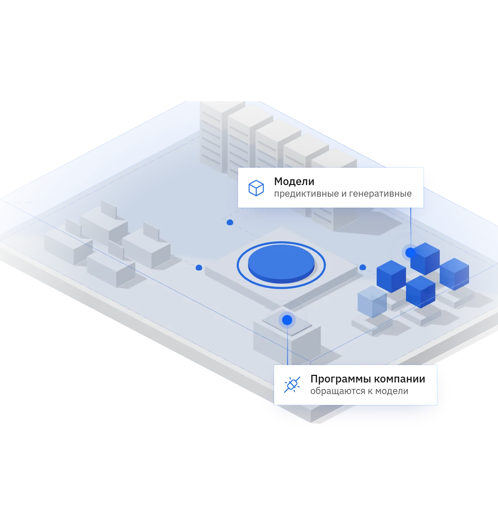

Прогноз поломок оборудования
- Задача
- Ремонт начинается после остановки линии.
- Что меняется
- Сигнал о вероятной поломке приходит заранее, ремонт планируется.
- Модели
- Предиктивные
- Что измерять
- Внеплановые простои в месяц, часы простоя
Главная / Сценарии
Примеры задач, которые компании решают своими моделями на внутренних серверах. У каждого сценария указано, по какому показателю видно результат. Атриум запускает модель и выдаёт адрес и токен для обращения к ней. Приложение для сотрудников делает ИТ компании или интегратор.

Схема
Данные о линиях, сырье и качестве не выходят за пределы предприятия. Модели работают рядом с этими данными.
Медицинские и персональные данные клиентов страховщики стараются не отправлять во внешние сервисы. Модели тарифа, убытков и документов работают внутри компании.
Платёжные и кредитные данные остаются в контуре банка. Каждое действие с моделью записано для проверок.
Если задачи нет в списке, достаточно описать её в двух строках: какие данные, какая модель, где она должна работать.